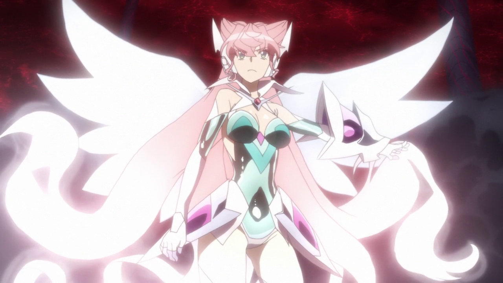

SG-x00'
Airgetlamh
Maria Cadenzavna Eve
María es una ídol enérgica y un poco misteriosa. Inicialmente fue una antagonista durante G antes de convertirse en protagonista de GX en adelante. Gradualmente se revela que tiene un corazón en conflicto, dividido entre su determinación de completar su misión y su falta de voluntad para causar daño a los demás, pero en el fondo solo una chica amable y sincera que simplemente quiere ayudar y proteger a todos los que quiere. Se retiro de los escenarios y es un agente secreto de la organizacion S.O.N.G. Tiene un estilo de pelea de largo y corto alcance, su estilo musical es el Orquestal Rock con elementos del country Rock